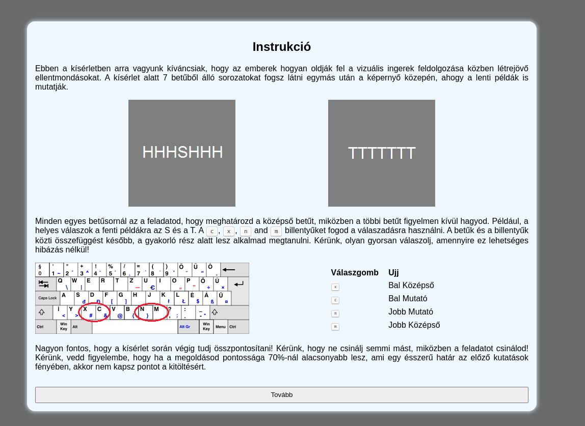

<!DOCTYPE html>
<html>
  <head>
    <title>082_parametric_cse</title>
    <script src="jspsych/dist/jspsych.js"></script>
    <script src="jspsych/dist/plugin-html-keyboard-response.js"></script>
    <script src="jspsych/dist/plugin-fullscreen.js"></script>
    <script src="jspsych/dist/plugin-instructions.js"></script>
    <script src="jspsych/dist/plugin-call-function.js"></script>
    <script src="jspsych/dist/plugin-html-keyboard-response.js"></script>
    <script src="jspsych/dist/plugin-html-button-response.js"></script>
    <script src="jspsych/dist/plugin-survey.js"></script>
    <script src="jspsych/dist/plugin-preload.js"></script>
    <script src="jatos.js"></script>
    <link href="jspsych/dist/jspsych.css" rel="stylesheet" type="text/css" />
    <link href="css/082_exp_design.css" rel="stylesheet" type="text/css" />
    <!--<link rel="stylesheet" href="https://unpkg.com/@jspsych/plugin-survey@0.2.0/css/survey.css">-->


  </head>
  <body>
    
  </body>
  <script> 

//------This script generates a random order of stimuli with the rules of the predefined methods-----
var request = new XMLHttpRequest();
request.open("GET", "trials97.json", false);
request.send(null);
const trial_blocks = JSON.parse(request.responseText);

var stimulus_set = []
console.log(trial_blocks["trials"][0][2][2])
var relay = 0


// -------------------JsPsych-------------------------------------------------------------------------------------------

var timeline = []

var jsPsych = initJsPsych({
  timeline: timeline,
  on_finish: function () {
    jatos.endStudy(jsPsych.data.get().csv());
    //jsPsych.data.displayData();
  },
  override_safe_mode : true
})

var participant_id = jsPsych.randomization.randomID(15);

jsPsych.data.addProperties({
    participant_id: participant_id,
  });

//defining stimuli arrays-----------------------------------

var practice_stimuli = []
var test_stimuli_1 = []
var test_stimuli_2 = []
var test_stimuli_3 = []
var test_stimuli_4 = []
var test_stimuli_5 = []
var test_stimuli_6 = []

//function to fill up stimuli arrays randomly------------------------

function stimuli_reroll(array,practice){
	var random = Math.floor(Math.random() * trial_blocks["trials"].length);
		  console.log(random)
	var stimulus_set = trial_blocks["trials"][random]
	for (i = 0; i < stimulus_set.length; i+=1) {
			  array.push({stimulus : stimulus_set[i][0], congruency : stimulus_set[i][1], correct_response : stimulus_set[i][2]})
	}
}

stimuli_reroll(practice_stimuli, 1)
stimuli_reroll(test_stimuli_1, 0)
stimuli_reroll(test_stimuli_2, 0)
stimuli_reroll(test_stimuli_3, 0)
stimuli_reroll(test_stimuli_4, 0)
stimuli_reroll(test_stimuli_5, 0)
stimuli_reroll(test_stimuli_6, 0)

var informedProceed = true

// Informed
var informedScreen = {
  timeline: [{
    type: jsPsychHtmlButtonResponse,
    stimulus: function() {
    return  `<div> 
  <h1>Tájékoztató nyilatkozat</h1> 
  <p>
    Egy tudományos kutatásban veszel részt, amelynek témavezetője Dr. Aczél Balázs,
    az ELTE Affektív Pszichológia Tanszékének kutatója. A kutatás célja megvizsgálni
    a korlátozott válaszadási idő hatását a konfliktusadaptációra.
  </p>
  <p> 
    A kutatásban való részvétel teljesen önkéntes. A vizsgálatot bármikor indoklás nélkül 
    megszakíthatod. 
    Ha bármilyen kérdésed, észrevételed vagy problémád van a kérdőívvel kapcsolatban, írj 
    Bognár Miklósnak, a bognar.miklos@ppk.elte.hu email címre.
  <p/>
  <p>
    Az ELTE PPK Affektív Pszichológia Tanszék Metatudomány Kutatócsoportja mint
    adatkezelő szigorúan bizalmasan kezel minden olyan személyes információt,
    amit a kutatás keretein belül gyűjtünk össze. Ezeket kóddal ellátva, 
    biztonságos számítógépeken tároljuk. A kezelt adatok a következők:
    NEPTUN-kód, életkor, nem, iskolai végzettség. Az azonosítására alkalmas
    adatokat (NEPTUN-kód) arra használjuk fel, hogy regisztrálhassuk a
    kutatásban való részvételért járó kurzuspontokat, ezután törölni fogjuk őket. 
    Válaszaid semmilyen módon nem lesznek hozzád köthetők. Személyes adataidat
    más adatkezelőnek, adatfeldolgozónak nem adjuk át, ám az anonimizált
    (személyes azonosításra nem alkalmas) adataid más kutatókkal megosztjuk.
    E tényállás részleteit a „Hozzájárulás adatkezeléshez” c. dokumentum 
    tartalmazza <a target="_blank" href="http://metasciencelab.elte.hu/hozzajarulas-adatkezeleshez">ITT</a>.
    Az adatkezelésről szóló szabályozásról részletesebben pedig
    <a target="_blank" href="https://ppk.elte.hu/file/Hozzajarulas_adatkezeleshez_melleklet_2018.pdf.">ITT</a> tájékozódhatsz.
  <p/>
  <p>
    A kutatás során nyert személyes adataidat arra használjuk fel, hogy regisztrálhassuk a 
    részvételért járó kurzuspontokat. Az azonosítására alkalmas adatokat (NEPTUN kód) ezután 
    törölni fogjuk. A kezelt adatok a következők: Neptun-kód, Életkor, Nem, Iskolai végzettség.
    Válaszaid nem lesznek semmilyen módon hozzád köthetők. Az anonimizált adataidat más 
    kutatókkal megosztjuk.
    <p/>
  <p class=${informedProceed? null: 'alert'}>A továbblépéshez kattints a Részt veszek gombra!</p>
</div>`},
    // canvas_size: [300, 300],
    choices: ['Részt veszek', 'Nem veszek részt'],
    on_finish: function (data) {
      // agree is 0, not agree is 1 as a response
      if (data.response === 0) {
        informedProceed = true
      } else {
        informedProceed = false
      }
    },
    data: {
      task: 'informed'
    },
    save_trial_parameters: {
      stimulus: false
    }
  }],
  loop_function: function(){
    if(informedProceed){
      return false;
    } else {
      return true;
    }
  }
};

var consentProceed = true

var consentScreen = {
    timeline: [{
      type: jsPsychHtmlButtonResponse,
      stimulus: function () {
        return `<div>
        <h1>Beleegyező nyilatkozat</h1>
        <p>
    Felelősségem teljes tudatában kijelentem, hogy a mai napon az Eötvös Loránd
    Tudományegyetem, Dr. Aczél Balázs kutatásvezető által végzett vizsgálatban
    önként veszek részt. A vizsgálat jellegéről annak megkezdése előtt kielégítő
    tájékoztatást kaptam. Elmúltam 18 éves. Nem szenvedek semmilyen pszichiátriai
    betegségben. A vizsgálat idején alkohol vagy drogok hatása alatt nem állok.
    Tudomásul veszem, hogy az azonosításomra alkalmas személyi adataimat bizalmasan
    kezelik. Hozzájárulok ahhoz, hogy a vizsgálat során a rólam felvett, személyem
    azonosítására nem alkalmas adatok más kutatók számára is hozzáférhetők legyenek.
    Fenntartom a jogot arra, hogy a vizsgálat során annak folytatásától bármikor
    elállhassak. Ilyen esetben a rólam addig felvett adatokat törölni kell.
    Tudomásul veszem, hogy csak a teljesen befejezett kitöltésért kapok pontot a
    Pszichológiai kísérletben és tudományos aktivitásban való részvétel című
    kurzuson.
  </p>
  <br>
  <h3>A kutatásban való részvétel körülményeiről részletes tájékoztatást kaptam, a feltételekkel egyetértek.</h3>
  <p class=${consentProceed ? null : 'alert'}>A továbblépéshez kattints a Részt veszek gombra!</p>
  </div>
  `},
      choices: ['Részt veszek', 'Nem veszek részt'],
      on_finish: function (data) {
        // agree is 0, not agree is 1 as a response
        if (data.response === 0) {
          consentProceed = true
        } else {
          consentProceed = false
        }
      },
      data: {
        task: 'consent'
      },
      save_trial_parameters: {
        stimulus: false
      }
    }],
    loop_function: function () {
      if (consentProceed) {
        return false;
      } else {
        return true;
      }
    }
}

const images = ["images/congruent_stim.png","images/incongruent_stim.png","images/qweertz_bill.png"]

var preload = {
      type: jsPsychPreload,
      images: images
}

const instructionsScreen = {
    type: jsPsychHtmlKeyboardResponse,
    stimulus: `
  <div>
  <h1>Instrukciók</h1>
  <p>
    </img>
  </p>
  <p>
    Kérünk, hogy a feladatot számítógépen végezd el (ne telefonon, tableten stb.)!
    Nagyon fontos, hogy a kísérlet során végig tudj összpontosítani, ezért kérünk, hogy ne csinálj semmi mást,
    miközben a feladatot csinálod! Ha 70% feletti pontossággal oldod meg a feladatot, valamint, ha elvégzed a feladat mindkét részét,
    akkor 1 pontot kapsz a „Pszichológiai kísérletben és tudományos aktivitásban való részvétel” nevű kurzuson.
    Ha a megoldásod pontossága 70%-nál alacsonyabb lesz (ami egy ésszerű határ az előző kutatások fényében),
    illetve ha csak az egyik részt teljesíted, akkor nem kapsz pontot a kitöltésért.
    
    A teszt egy gyakorló résszel indul, ahol 85%-os pontossággal kell teljesítened, hogy kitölthesd a tesztet.
    Amennyiben nem éred el a 85%-ot, a gyakorló blokk mindaddig újraindul, amíg ez a pontossági szint nem valósul meg.
  </p>
  Nyomd meg a Space billentyűt a folytatáshoz!
  </div>
  `,
    choices: [" "],
    data: {
      task: 'instructions'
    },
    save_trial_parameters: {
      stimulus: false
    }
  
}

const neptun_demographics = {
  type: jsPsychSurvey,
  pages: [
    [
      {
        type: 'html',
        prompt: 'Kérlek add meg a NEPTUN kódodat és az alábbi demográfiai adataidat:'
      },
      {
        type: 'text',
        prompt: 'Mi a NEPTUN kódod?',
        name: 'neptun',
        required: true,
      },
      {
        type:'drop-down',
        prompt: 'Milyen nemű vagy?',
        options: ["Férfi", "Nő", "Egyéb"],
        name: 'nem',
        required: true,
        dropdown_select_prompt:'Válassz...'
      },
      {
        type: 'text',
        prompt: 'Mennyi idős vagy?',
        input_type: 'number',
        name: 'kor',
        required: true,
      },
      {
        type: 'drop-down',
        prompt: 'Mi a legmagasabb iskolai végzettséged?',
        options: ["befejezett 8. osztály", "érettségi", "emelt szintű szakképesítés (pl. emelt OKJ)", "felsőoktatási alapfokozat (BA/BSc)", "felsőoktatási mesterfokozat (MA/MSc)", "doktori fokozat (PhD/DLA)"],
        name: 'vegzettseg',
        required: true,
        dropdown_select_prompt:'Válassz...'
      }
    ]
  ],
  required_error:'"Kérlek válaszolj az alábbi kérdésre!"',
  button_label_finish: 'Beküldés',
  data: {
    task: 'survey'
  },
}

var fullscreen_trial = {
  type: jsPsychFullscreen,
  fullscreen_mode: true
}

var fullscreen_exit_trial = {
  type: jsPsychFullscreen,
  fullscreen_mode: false
}

var pause = {
  type: jsPsychHtmlKeyboardResponse,
  stimulus:  `
  <div>
  <h1>Blokk vége</h1>
  <p>
     Ennek a blokknak a végére értél!
  </p>
  <p>
    Ha szeretnél, nyugodtan tarts egy rövid, 1-2 perces szünetet!
  </p>
  <p>
    Emlékeztető a billentyűkhöz: 1 billentyű -> F, 2 billentyű -> H, 8 billentyű -> N, 9 billentyű -> P.
  </p>
  Nyomd meg a Space billentyűt a folytatáshoz!
  </div>
  `,
  choices: [" "],
  post_trial_gap: 0,
  data: {
    task: 'pause'
  },
  save_trial_parameters: {
    stimulus: false
  }
}

var pause_practice = {
  type: jsPsychHtmlKeyboardResponse,
  stimulus:  `
  <div>
  <h1> Gyakorló Blokk vége</h1>
  <p>
    A gyakorló blokk végére értél! Ez után hat kb 4 perces blokk következik.
  </p>
  <p>
    Ha szeretnél, nyugodtan tarts egy rövid, 1-2 perces szünetet!
  </p>
  <p>
    Emlékeztető a billentyűkhöz: 1 billentyű -> F, 2 billentyű -> H, 8 billentyű -> N, 9 billentyű -> P.
  </p>
  Nyomd meg a Space billentyűt a folytatáshoz!
  </div>
  `,
  choices: [" "],
  post_trial_gap: 0,
  data: {
    task: 'pause_practice'
  },
  save_trial_parameters: {
    stimulus: false
  }
}

var test = {
  type: jsPsychHtmlKeyboardResponse,
  stimulus: jsPsych.timelineVariable("stimulus"),
  choices: ["1","2","8","9"],
  trial_duration: 1500,
  response_ends_trial: true,
  data: {
    task: "response",
    correct_response: jsPsych.timelineVariable("correct_response"),
    congruency: jsPsych.timelineVariable("congruency")
  },
  on_finish: function (data) {
    data.correct = jsPsych.pluginAPI.compareKeys(data.response, data.correct_response);
  }, 
  css_classes: ['stim']
}
  

var fixation = {
  type: jsPsychHtmlKeyboardResponse,
  stimulus: '<div style="font-size:60px; color: gray;">+</div>',
  choices: "NO_KEYS",
  trial_duration: 500,
  response_ends_trial: false,
  data: {
    task: 'fixation'
  },
  save_trial_parameters: {
    stimulus: false
  }
}

var feedback = {
  type: jsPsychHtmlKeyboardResponse,
  stimulus: function() {
    var last_trial_correct = jsPsych.data.get().last(1).values()[0].correct
      if(last_trial_correct){
        return "<p></p>"; 
      } else {
        return "<p>Helytelen / Nincs válasz</p>";
      }
  },
  data: {
    task: 'feedback'
  },
  save_trial_parameters: {
    stimulus: false
  },
  trial_duration: 800,
  response_ends_trial: false,
}

var procedure_practice ={
  timeline: [fixation, test, feedback],
  timeline_variables: practice_stimuli
}

var procedure_1 = {
  timeline: [fixation, test, feedback],
  timeline_variables: test_stimuli_1
}

var procedure_2 = {
  timeline: [fixation, test, feedback],
  timeline_variables: test_stimuli_2
}

var procedure_3 = {
  timeline: [fixation, test, feedback],
  timeline_variables: test_stimuli_3
} 
var procedure_4 = {
  timeline: [fixation, test, feedback],
  timeline_variables: test_stimuli_4
} 
var procedure_5 = {
  timeline: [fixation, test, feedback],
  timeline_variables: test_stimuli_5
} 
var procedure_6 = {
  timeline: [fixation, test, feedback],
  timeline_variables: test_stimuli_6
} 

timeline.push(
  fullscreen_trial,
  informedScreen,
  consentScreen,
  neptun_demographics,
  instructionsScreen,
  procedure_practice,
  pause_practice,
  procedure_1,
  pause,
  procedure_2,
  pause,
  procedure_3,
  pause,
  procedure_4,
  pause,
  procedure_5,
  pause,
  procedure_6,
  pause,
  fullscreen_exit_trial
)


jatos.onLoad(
  jatos.addAbortButton(),
  jsPsych.run(timeline)
);
//jsPsych.run(timeline)
  </script>
</html>
